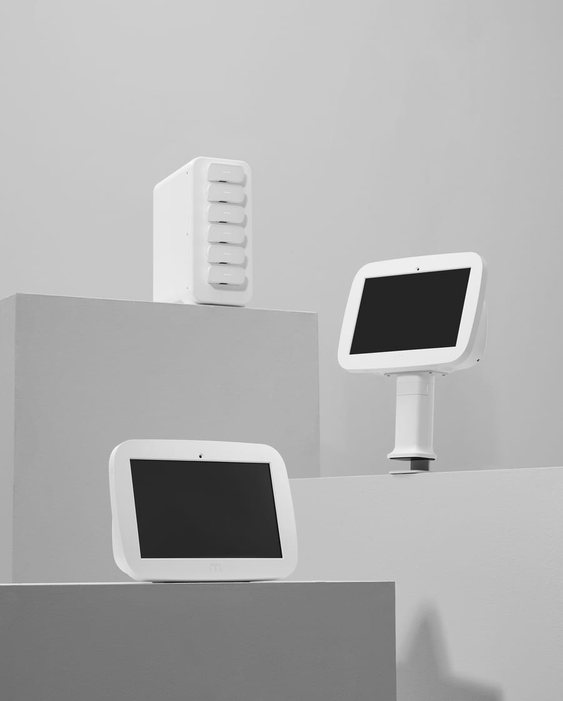

Pro hosty
TableFlow – moderní objednávání pro restaurace
Vyvíjíme a dodáváme řešení, které umožňuje hostům objednávat přímo od stolu prostřednictvím tabletů. Propojujeme moderní technologie s každodenním provozem restaurací a pomáháme zjednodušit práci obsluhy.
Podívejte se, jak Tableflow funguje.
V krátké ukázce uvidíte, jak objednávání přímo od stolu funguje a jak může změnit každodenní provoz restaurace.
Jak Tableflow může změnit chod restaurace?
V této minutové ukázce uvidíte rozdíl mezi restaurací s dvěma číšníky a jedním číšníkem, kterému pomáhá Tableflow systém.
Méně čekání na objednávku. Více času na hosty.
Hosté objednávají přímo od stolu. Obsluha má více prostoru věnovat se servisu a dalším přáním hostů.
Všechno potřebné přímo u stolu.
Schéma průběhu. Není to snímek aplikace ani platební stránky. Značka QR není platební kód.
- QR kód Zobrazí se na tabletu u stolu.
- Telefon hosta Platební stránka se otevře na telefonu.
- Platební brána Napojená na pokladnu restaurace.
-
01
Menu a fotografie
Host si prohlíží kategorie, fotografie jídel, popisy a ceny.
-
02
Úpravy jídel
Host vybírá dostupné přílohy a doplňky a upravuje položky podle možností menu.
-
03
Košík a odeslání
Host zkontroluje objednávku a odešle ji. Objednávka se předá do propojené pokladny ke konkrétnímu stolu.
-
04
Alergeny a úpravy
Host si prohlíží náhled karty jídla, s informacemi o alergenech a může si jídlo upravit.
-
05
Platba přes Dotykačku
Pokud má restaurace aktivní podporované platební řešení Dotykačky, host může zaplatit na svém telefonu přes QR kód a platební bránu napojenou na pokladní systém restaurace. Tableflow platbu samo nezpracovává.
-
06
QR kód
Na tabletu se zobrazí QR kód. Host ho naskenuje svým telefonem.
Jedno řešení. Tři přínosy.
Pro obsluhu
Méně ručního zapisování objednávek.
Více prostoru pro péči o hosty.Pro provoz
Objednávky jdou do pokladny.
Hosté mají přístup k objednávkám kdykoliv, takže mohou objednávat více, i když je personál vytížený.Tablet, který patří ke stolu.
Tableflow využívá specializovaný hardware od zkušeného technologického výrobce z Jižní Koreje. Řešení kombinuje tablet, pevné uchycení, výměnnou baterii a nabíjecí stanici pro použití v restauracích.
Další obrázky tabletů a nabíjecích doků ve dvou barevných provedeních
- Pevné uchycení. Držák se připevňuje k desce stolu pomocí svorky. Takže se nemusí do stolu vrtat.
- Výměnná baterie. Baterii lze vyměnit bez odnášení celého zařízení.
- Nabíjecí stanice. Jedna stanice nabíjí až šest baterií.
- Barevné varianty. Dostupné v černém a bílém provedení.
Od propojení k první objednávce.
-
01 — Propojení pokladny
Ověříme možnosti integrace a nastavíme propojení.
-
02 — Příprava menu
Načteme dostupné položky a ceny a připravíme potřebné doplňující informace podle možností systému.
-
03 — Přiřazení stolů
Každý tablet nastavíme pro konkrétní stůl.
-
04 — Ověření provozu
Před spuštěním vyzkoušíme objednávku a její předání do pokladny.
Objednávky ve vaší pokladně.
Tableflow doplňuje stávající pokladní systém. Je to rozšíření, samostatně bez pokladního systému nefunguje.
Dotykačka
Integrace je funkční. Menu, ceny a stoly se načítají z pokladny a objednávky se předávají ke konkrétnímu stolu. Pokud má restaurace aktivní podporované platební řešení Dotykačky, host může po objednávce zaplatit na svém telefonu prostřednictvím QR kódu. Platba probíhá přes platební bránu napojenou na pokladní systém dané restaurace. Tableflow platby samo nepřijímá ani nezpracovává.
Storyous
Tableflow lze propojit s pokladním systémem Storyous za podmínek daných poskytovatelem. Objednávky se předávají přímo do pokladny, kde je obsluha dále zpracovává a uzavírá účet. Možnosti integrace a její podmínky řešíme individuálně. Platba kartou přímo přes tablet Tableflow v této integraci zatím není dostupná.
Možnosti propojení ověříme individuálně během prezentace. Kompatibilitu nelze předpokládat automaticky.
Otázky, které padají jako první
Funguje Tableflow s naší pokladnou?
Aktuálně funguje propojení s Dotykačkou. Storyous lze propojit za příslušných podmínek a s potřebným API tokenem. U jiných systémů ověříme možnosti individuálně.
Musíme zakládat menu znovu?
U podporované integrace se dostupné položky a ceny načítají z pokladny. Rozsah synchronizace a další úpravy závisí na konkrétním systému.
Potřebují hosté vlastní aplikaci?
Ne. Objednávají na tabletu přímo u stolu.
Jak funguje platba?
Pokud má restaurace aktivní podporované platební řešení Dotykačky, host může po objednávce zaplatit na svém telefonu prostřednictvím QR kódu. Platba probíhá přes platební bránu napojenou na pokladní systém restaurace. Tableflow platby samo nepřijímá ani nezpracovává. Účet jinak uzavře obsluha. U Storyous platba kartou přes tablet Tableflow není dostupná.
Jak funguje pronájem?
Nabízíme pronájem s jednorázovou instalací a měsíčním poplatkem podle počtu stolů a sjednané smlouvy. Konkrétní nabídku připravíme po prezentaci.
Jak dlouho trvá instalace?
Záleží na počtu stolů, přípravě provozovny, nicméně instalace by měla být hotová během půl dne. Všechno si předem domluvíme a projdeme.

Máte zájem o Tableflow ve své restauraci?
Kontaktujte nás buď e-mailem info@tableflow.cz nebo vyplňte formulář níže a my vás budeme kontaktovat. Rádi za vámi přijedeme, představíme vám Tableflow přímo u vás a společně probereme možnosti propojení s vaší pokladnou.